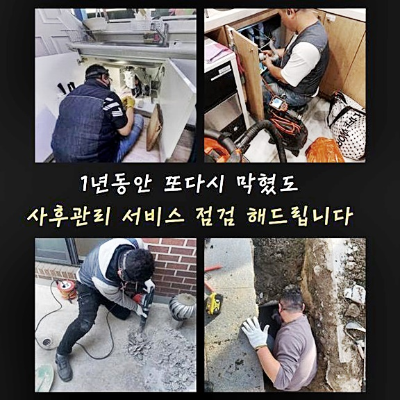
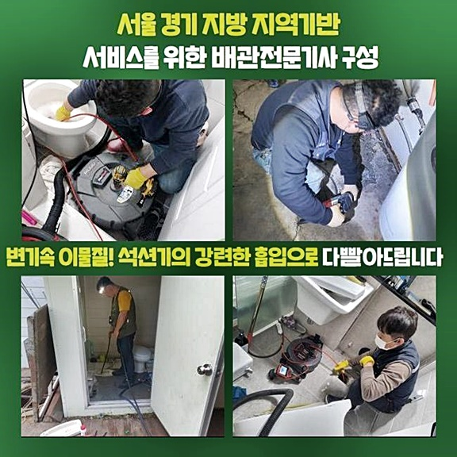
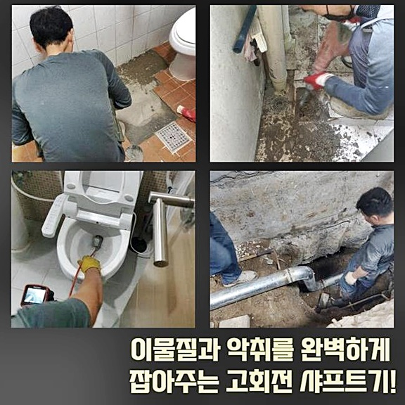
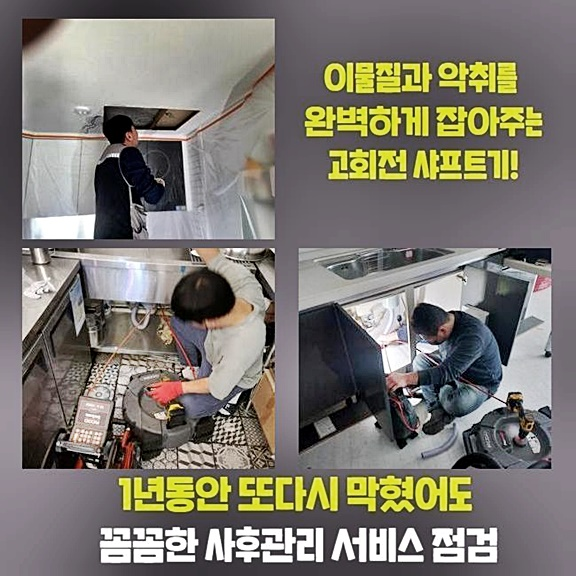
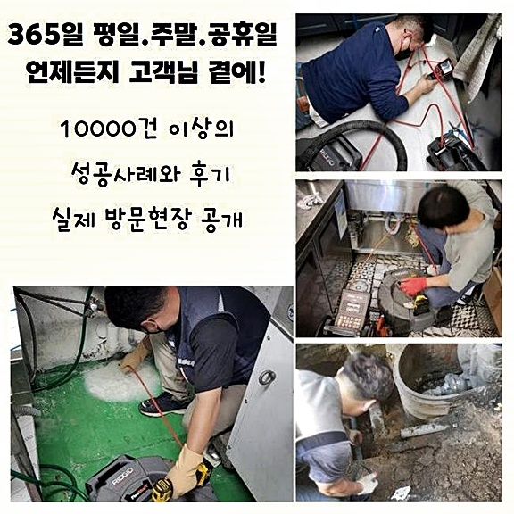
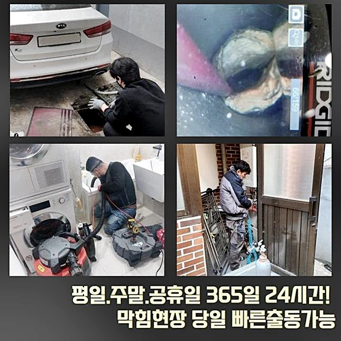

🏠 강북 미아동싱크대역류 삼각산동 하수구청소 설비업체
용인 싱크대막힘 전문 시공 후기

📋 작업 개요
- 위치: 용인
- 서비스 유형: 싱크대막힘, 하수구막힘, 배관막힘, 역류해결, 배관청소, 고압세척
- 작업 일시: 2024. 8. 10. 17:20
- 업체명: 하수구수사대 (010-5615-2118)
🔍 문제 상황
인사올립니다
하수관로 막힘의 작업장에 언제라도 염려없이 달려가는 배관문제 해결사입니다
지난달에 의뢰인께서 다용도실내부 하수파이프에 이상이 있다고 요청을 하셔서 발생장소에 찾아뵈었어요
강북 미아동싱크대역류 삼각산동 하수구청소 설비업체
배수가 전혀 되지 않으면서 역한냄새도 발생하여 긴급히 저희 배수구막힘 팀에 요청하신 상태였습니다
저희 전문기사님은 관련 발생장소에 방문해서 배수가 안되는 장애의 근원을 파악하고 말끔히 처리해 드렸습니다
어떠한 과정으로 물막힘의 근원을 발견해 고치게 되었는지 같이 보면서 말씀드리겠습니다
만약에라도 같은 현황에 직면하신다면 동요하지 말고 오늘 확인한 본문을 기억해두면 유용하실거예요
저희 베테랑이 방문한 지역은 주택단지로 해당 주거지의 다목적실에 세탁기 배수라인이 막힘상태라고 알려주셨는데요
고객의 말을 듣고 문제지점을 조사해보니 고약한 냄새가 나면서 비눗물이 올라오며 역류하는 사태가 일어났어요
해결하기 전에 근본적인 이유를 분석하기 위해 하수관 냄새를 어느 시기부터 감지하셨는지 자세히 질문드렸습니다

🔎 원인 분석
💡 전문가 진단: 정밀 진단 장비를 사용하여 슬러지의 고착 여부를 판명하고 타격/세척 작업을 실시했습니다.
고객님께서는 분명하지는 않지만 한달가량 전쯤부터 물 내려가는게 느려졌던 느낌이 들었다고 대충이나마 기억하고 있는대로 설명하셨어요
하수파이프 막힘이 생긴다면 주로 돌연해 문제가 발생했다고 판단하시겠지만 실제론 이와 같은 사전 증상이 나타납니다
그런데 이상황을 크게 신경 쓰지 않으면서 그냥 지나쳐 결국 그날 아침처럼 배수되지 않는 상황까지 벌어진 것입니다
수도가 설치된 위치라면 배수구에서 올라오는 불쾌한 냄새가 아님에도 세면기나 싱크대등 악취가 퍼질 수 있습니다
심한 냄새가 발생하는 것 이는 곧 배수관 내부에 찌꺼기가 부패한다는 의미라고 여긴다면 이상이 있다는 것을 금방 생각할 수 있을거예요
막힘장소에 방문해 배수를 진행했더니 의뢰인이 말한 그대로 세제거품들이 역류되면서 지독한냄새도 올라오기 시작했어요
이런식으로 하수배관 나쁜냄새가 풍기면 내부의 오염물을 제거하는 방법이 요구되기에 먼저 석션기기로 초기 흡입 처리를 수행했습니다
석션기기는 집안에서 이용중인 깊숙한 곳에 찌꺼기 정리는 어려울지라도 앞쪽에 위치한 물과 불순물을 없애는 것은 문제 없었습니다
저희 베테랑은 어떤 문제장소든 체계없이 여러 과정들을 행하는 대신에 체계적인 처리로 필요없는 단계를 제외합니다
하수관 내시경 기기를 배치할 수도 있겠지만 크게 막히지 않았다면 석션장비로 대다수의 문제가 처리될 수 있습니다
저희 베테랑이 발생장소에 방문하면 어떠한 절차로 상황을 대처하느냐에 따라 결국엔 소비자의 비용으로 계산되다보니 신경쓰고 있습니다
저희 베테랑은 어느 상황이든 이유를 명확하게 추적하고 해결하는 동안에 고객의 지출 금액까지 생각하여 부적절한 과정을 진행하지 않습니다

🔧 작업 과정
먼저 석션기기를 사용하여 파이프 안쪽의 오염물을 빼내는 업무를 수행하니 모래알 같은 침전물이 확인되었습니다
찌꺼기를 점검하니 배수관의 나쁜냄새를 야기하는 다른 찌꺼기인 기름찌꺼기가 속에 있다는 사실을 파악할 수 있었어요
이에 하수관 내시경기기를 사용하여 막힌 오염물이 어느부분에 어느정도 모여있는지 철저하게 살피기로 했어요
하수배관 내시경장비는 얇고 기다란 파이프 끝쪽에 카메라장비와 라이트가 하나의 세트로 연결되어 있으며 다른쪽 끝부분엔 모니터가 있습니다
어둡고 좁은 배수구 안쪽 상태를 바로 살펴볼 수 있어서 문제를 파악해 확실하게 해소할 수 있도록 지원하는 장치에요
하수배관 내에 넣어보니 불순물 덩어리들이 확인되었으며 모래와 유사한 것들도 찾아낼수 있었습니다
우리 기술자가 찾아간 현장은 이처럼 배수관 깊숙이 문제를 일으키는 찌꺼기는 하수관 세척기기가 진입하기 힘들어
연장 호스를 추가로 연결하여 청소하거나 샤프트 기구를 활용하여 갈아내고 세정하는 조치를 해요
저희 팀은 이처럼 실무 경험이 풍부해 문제를 파악해내는 데 차질이 생기지 않으며 문제를 파악해도 최적의 방식들로 없앨 수 있기 때문에 고객의 염려를 말끔하게 처리해 드리고 있습니다
이렇게 전략이 확정되면 곧바로 배수구 안쪽을 닦아내며 더러운 물질을 제거해 하수관 역한냄새로 인해 불쾌했던 막힘 문제들을 해결해요
한번만 시도하고 끝나지 않고 다시 세척을 진행하여 실행한 후 오수가 원활히 배수되는지 배수 테스트로 검토 한 후
다시 배관 카메라 장비를 투입해 체크하며 남은 오염물은 없는지 완벽하게 씻겨졌는지 조사하게 됩니다
우리 기술자가 수리했던 문제구역은 여러번에 걸쳐 문제를 야기하는 것들을 조사하여 확실히 청결한지가 진단되면 절차를 마치게됩니다
하수구에서 제거된 불순물들이 이렇게나 많아서 악취가 풍기고 불순물이 축적되며 역류 현상도 발생하게 되었습니다
간간이 부엌싱크와 붙어있는 배수관이면 부엌에서 이용한 기름 잔재들이 하수배관에 달라 붙어가며 기름찌꺼기나 식재료 찌꺼기들이 보이기도 합니다
이러한 경우에는 배수관 자체가 세탁기와 주방싱크대의 배수구가 이어진 상태라서 설거지 할 때 흘러간 하수들이 세탁실 배수관으로 역류 현상이 생길때도 있어요
이 상황은 어려운 경우라서 저희 팀처럼 전문 기술자들만 처리가 가능한 상태이기 때문에 불쾌한 냄새가 하수관에서 배어나오고 배수상황이 원활하지 않다고 느껴진다면 함께 확인한 예시처럼 막힘문제가 일어나기 전 징후임을 기억하셔야해요
막힘문제가 일어나기 전 전문인에게 수리를 연락을 주시면 방지하는 것이 가능한 부분들을 알아두면 도움이 되실거예요


✅ 작업 완료
도착하기전에도 전화 연락으로 상세히설명드리며 방문뒤에 세심한 검사를 완료하여 의뢰인댁에 적합한 개별 맞춤 해결책을 제공하고 있습니다
정확한 방식으로 문제를 풀어보시길 권장해드리겠습니다 혹시나 잘못된 시공방법을 사용해 가정에서 처리를 해보려고 하시는데
거꾸로 상태를 더 심각해지는 일이 대부분이라서 저희 수리업체로 재상담 요청을 자주 주시곤 하십니다
자택에서 문제가 풀린다면 무방하지만 상태가 악화되는 일을 예방하려면 우선 상담을 받아 보는 것이 올바른 판단입니다
고객 상담은 24시간 열려있어요 필요시 전화주셔서 걱정을 처리하시기 바래요



⚠️ 주방 싱크대 배관 막힘 예방 수칙
- ✅ 기름기가 묻은 식기나 프라이팬은 설거지 전 키친타올로 반드시 기름때를 닦아내세요.
- ✅ 주기적으로 싱크대 개수대에 뜨거운 물을 가득 받아 한 번에 내려 배관 내부 기름을 씻어내세요.
- ✅ 배수구 거름망을 미세한 필터로 사용하시고 음식물 찌꺼기가 틈으로 새어 들지 않게 관리하세요.
- ✅ 베이킹소다와 식초를 뜨거운 물과 함께 일주일에 한 번씩 부어주면 배관 살균과 막힘 예방에 좋습니다.
💡 핵심 정리
- 확실한 장비 작업(내시경 점검 및 샤프트 스케일링)으로 원인을 뿌리 뽑습니다.
- 작업 후 1년 이내에 동일한 부위 재발 시 100% 무상 A/S 서비스를 보장합니다.
- 서울 · 경기 · 인천 전 지역에 24시간 언제든 긴급 출동할 수 있도록 항시 대기 중입니다.
❓ 자주 묻는 질문 (FAQ)
🚨 용인 싱크대막힘 문제로 고민이신가요?
정확한 원인 진단과 확실한 시공으로 재발 없는 해결을 약속드립니다.
24시간 긴급 출동 | 서울 · 경기 · 인천 전지역 | 1년 내 재발 시 무상 A/S